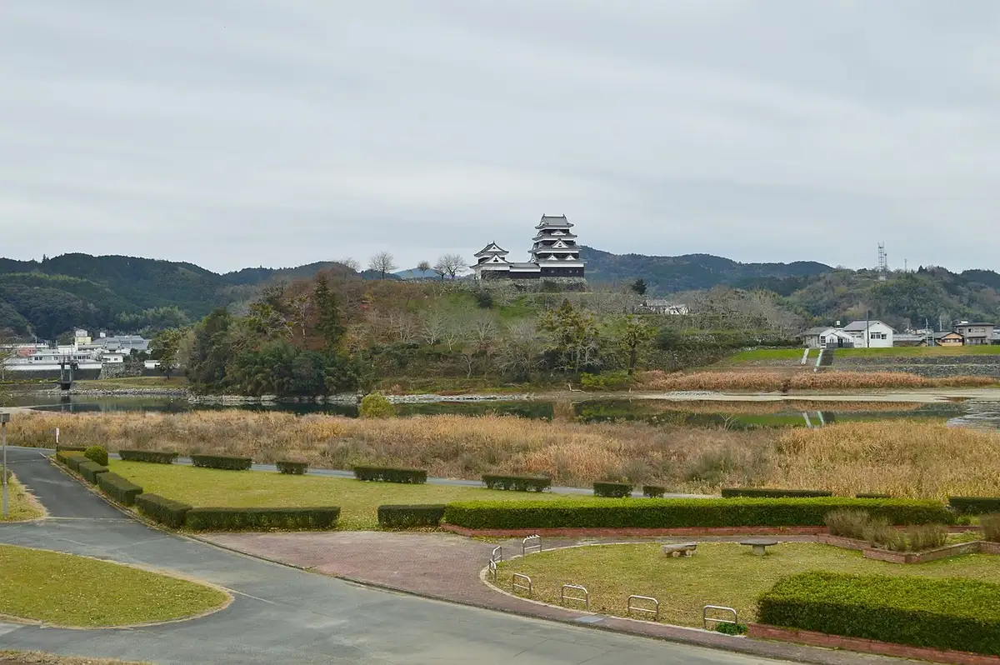
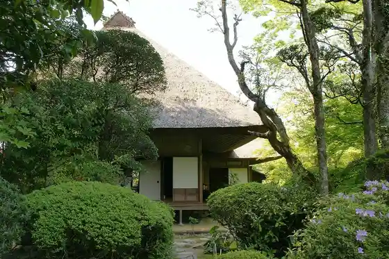
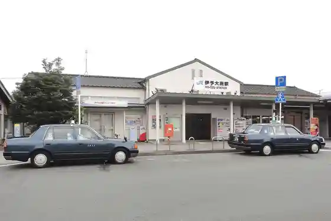
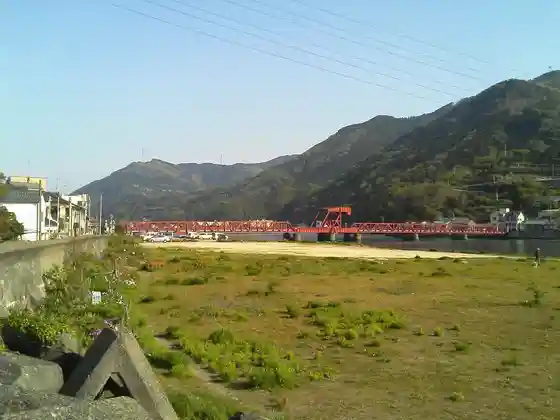

Ozu
Ozu · Ehime
Ozu
Highlighted on the Ehime map.

Stay
Hotel Ota
Kano Kawa Onsen Ozu Koryu Sokushin Center Kano Kawa So
Ozu Plaza Hotel
Ryo En Taru I
Supa Hotel Ehime Ozu Inta Tennen Onsen (Asagiri Baths)
NIPPONIA HOTEL Ozu Castle Town
Maroya Shiki
Cafe&Hotel Palette STAYs
Dining
Ruan NIPPONIA HOTEL Ozu Castle Town
Kakure Ie Megumi Hime
Kankoku Yakiniku Kagetsu
IKKYU
Fun Aburaya
Suki Ie 56 Go Ozu Matsugahanaten
Kyodoryori Jun
Guriinhausu
Nana
Mosubaga Ozu Mise
cafe Sanpo
O Konomi Yaki Nishi Kawa
Taruyo Kokorozashi
Kitsuneya
Yama Sakae Do
Waka Miya Shokudo
Onsen
Kano Kawa Onsen Ozu Koryu Sokushin Center Kano Kawa So Public Bath
Matsu Gakuryo Kan Public Bath
Supa Hotel Ehime Ozu Inta Tennen Onsen (Asagiri Baths) Tennen Onsen
Sights
Ozu Shiro
Garyu Sanso

Iyo Ozu Eki

Nagahama Bridge
